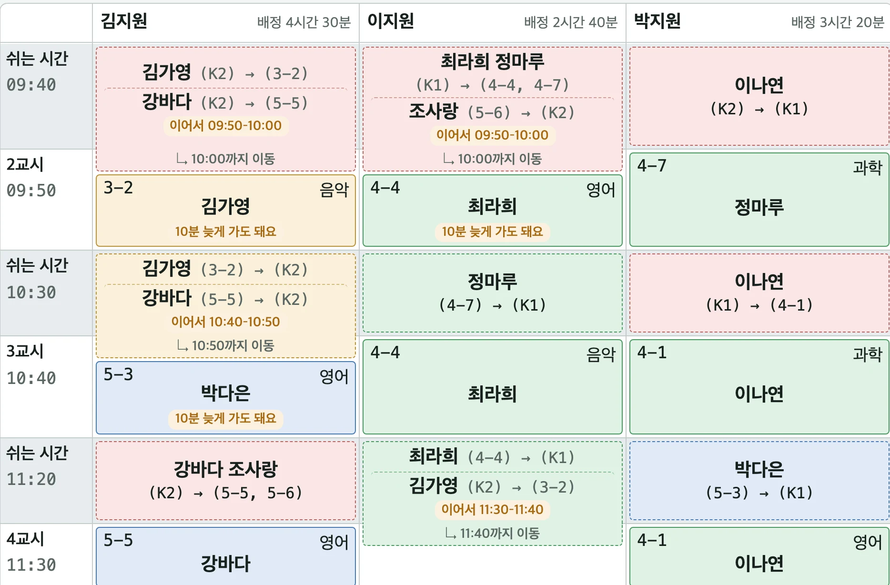
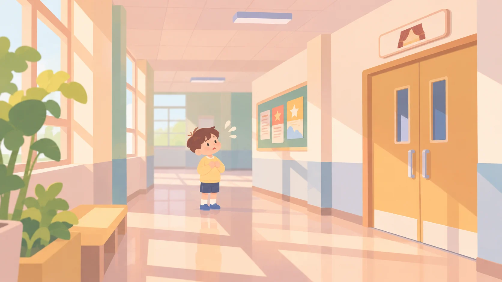
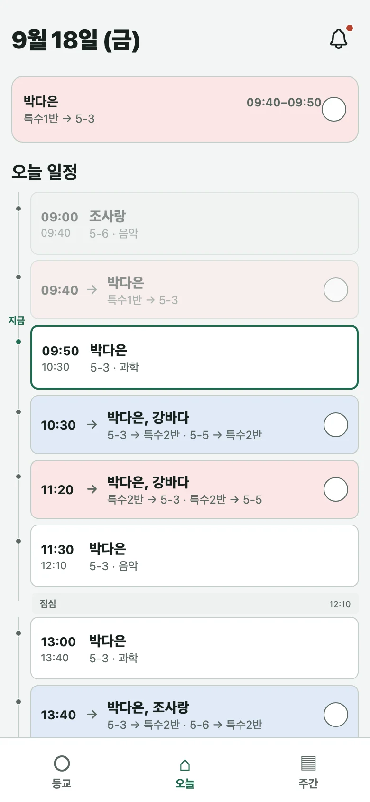
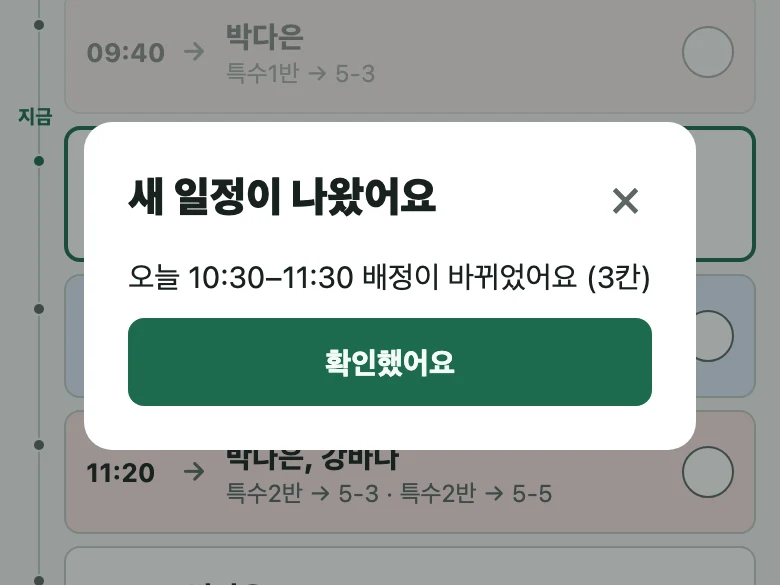
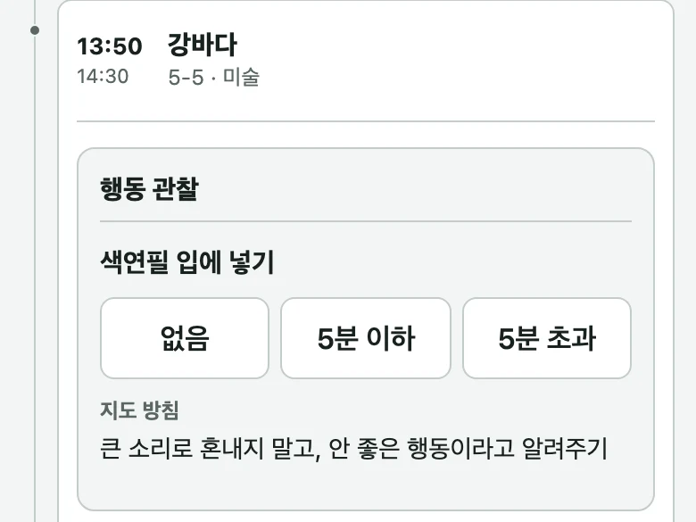
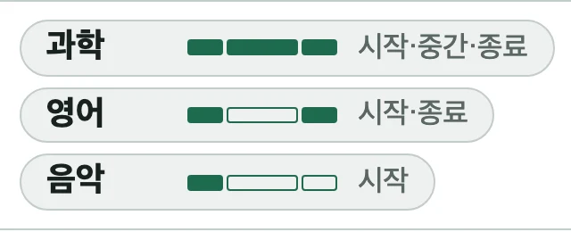
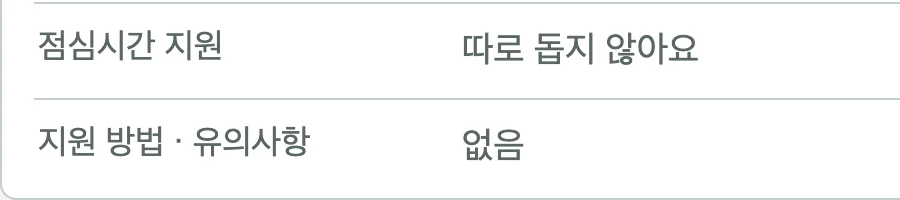
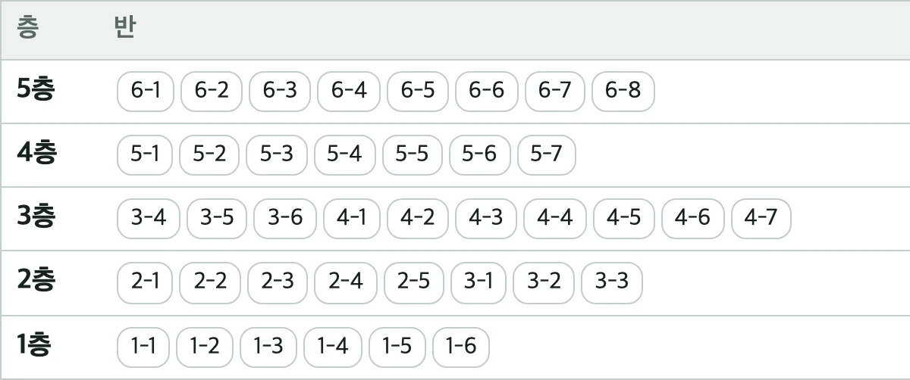
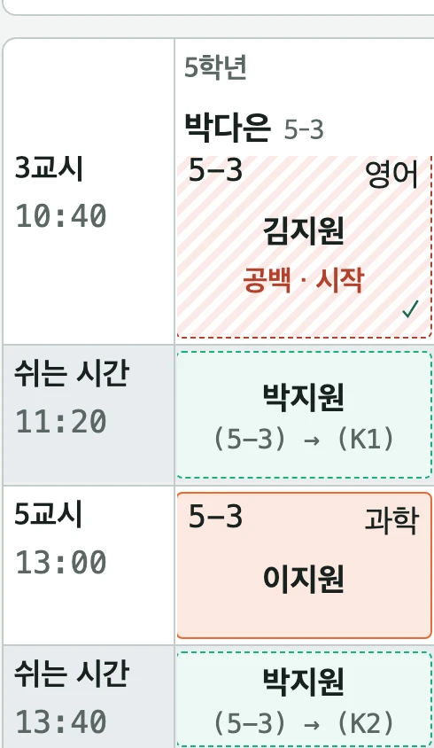
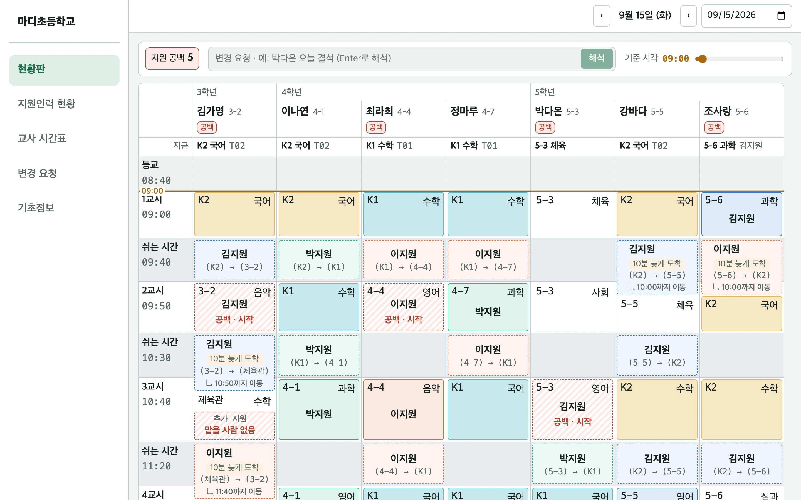

마디마다, 함께.
학생에게 필요한 지원이 필요한 순간에 닿도록
특수교사와 지원인력 사이의 일정과 정보를 연결합니다.
갑작스러운 변경에도 필요한 지원을 우선으로.
이교사 통합학급 담임
선생님 오늘 3교시 체육관 활동에 지원이 필요할 것 같아요.
가영이가 이동이랑 활동에 참여할 때 도움이 필요할 것 같아서요. 가능할까요?
김교사 특수교사
이미 모두 배정되어 있는데 어떤 분을 보내야 하지..?

기존 일정과 학생별 지원 필요도를 고려해 새로운 배정안을 제안합니다.
김가영 3교시 체육관 활동
여러 배정안을 한눈에
기존 일정과 학생별 지원 필요도를 고려한 배정안을 비교합니다.
최종 선택은 선생님이
제안된 배정안 중 적절한 안을 직접 선택하고 확정합니다.
어? 가영이는 누가 데려가기로 했죠?

시간표를 변경해도 담당자에게 제대로 전달되지 않으면 지원이 어긋날 수 있습니다.
변경된 순간 담당자의 시간표까지 바로.
변경사항은 모바일 앱으로 즉시 전달되고 담당자의 시간표에도 자동 반영됩니다.
김지원A01
이지원A02
5교시13:00
3-2과학김가영
5-3과학박다은
쉬는 시간13:40
6교시13:50
5-5음악강바다
이지원 선생님은 6교시가 비어 있어요



학생마다 필요한 지원도 다른데...
김가영체육 활동 시 이동 지원 필요
이나연과학실 이동 지원 필요
최라희활동 중 지속적인 지원 필요
정마루특정 시간대 집중 지원 필요
박다은급식시간 지원 필요
강바다같은 층 이동 시 동행 가능
조사랑지원 시 주의사항 확인 필요
현장의 다양한 조건을 그대로 담아 배정합니다.




학생에게 필요한 지원이 어느 순간에도 끊어지지 않도록.
교사의 계획부터 지원인력의 하루까지 이어주는 마디

우리 학교에서도
마디를 만나보세요.
마디는 정식 출시를 준비하고 있습니다. 먼저 사용해 보고 싶은 학교에는 도입 일정과 이용 방법을 안내해 드릴게요.